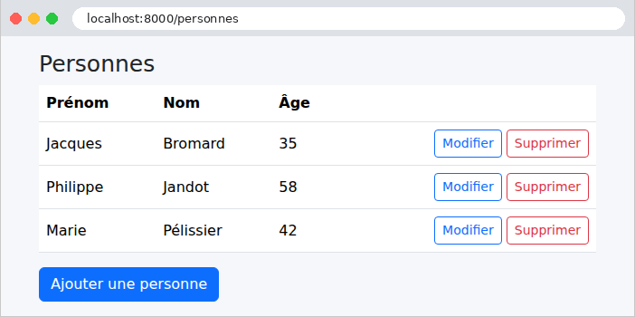
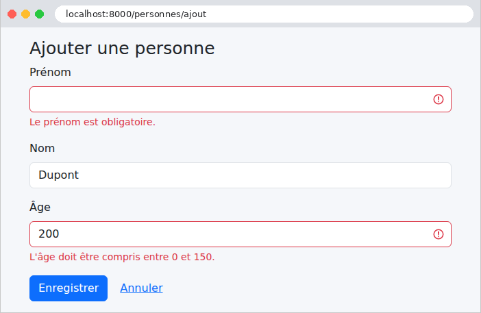
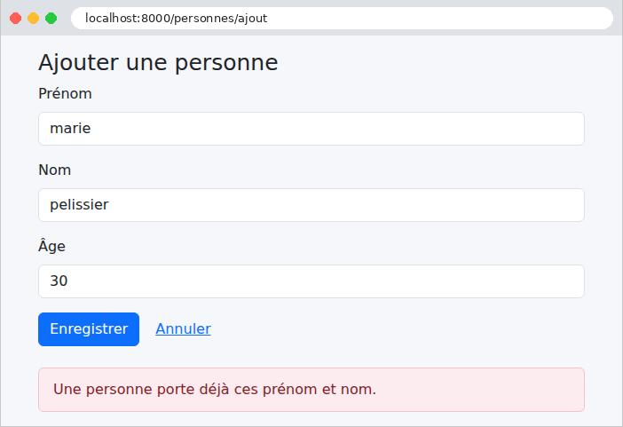
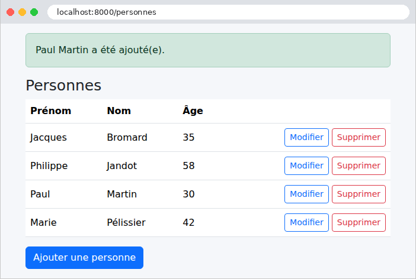
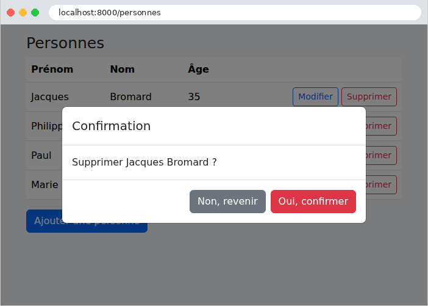
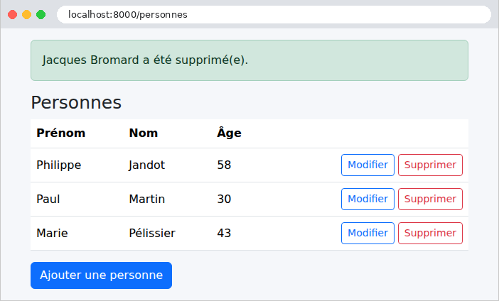

9. Architecture en couches et accès aux données
Les exemples précédents gardaient leurs données en mémoire, ou dans le cache. Une vraie application les garde dans une base de données, et s'organise en couches (cf. schéma de l'introduction) :
- la couche web (contrôleurs, formulaires, vues) : lire la requête, appeler la couche métier, choisir la vue ;
- la couche métier : les règles de gestion ;
- la couche DAO (Data Access Object) : les requêtes à la base de données.
Chaque couche ne connaît que la couche du dessous, et le moins possible de ses détails : la couche web ignore le SQL, la couche métier ignore le HTML. Cette séparation rend chaque couche plus simple à comprendre, à tester et à faire évoluer. L'exemple 28 l'applique à la gestion d'une liste de personnes : c'est, en plus petit, la gestion des médecins et des clients de l'étude de cas.
En [PHP], l'accès à une base de données repose sur plusieurs étages :
- l'extension PDO (PHP Data Objects) de [PHP] définit une interface commune à tous les SGBD : ouvrir une connexion, exécuter un ordre SQL, lire les lignes. Chaque SGBD a son pilote : [pdo_mysql] pour [MySQL] (et [MariaDB]), livré avec [PHP] ;
- Doctrine DBAL (Database Abstraction Layer) ajoute à PDO la gestion des connexions et des transactions, un constructeur de requêtes, la conversion des types, et traduit les erreurs de chaque SGBD en exceptions communes (une violation de contrainte d'unicité devient une [UniqueConstraintViolationException], quel que soit le SGBD) ;
- Doctrine ORM (Object-Relational Mapper) fait correspondre des classes (les entités) aux tables de la base, et transforme les lignes lues en objets. Il suit le modèle dit Data Mapper : les entités sont des objets ordinaires, qui ne savent rien de la base ; un objet à part, le gestionnaire d'entités (entity manager), les lit et les enregistre. C'est la différence avec [Eloquent], l'ORM de [Laravel], qui suit le modèle Active Record (chaque objet sait se lire et s'enregistrer lui-même, [$personne->save()]).
[Doctrine] n'appartient pas à [Symfony] : c'est un projet indépendant, mais c'est l'ORM que [Symfony] recommande, et le DoctrineBundle l'intègre à l'application. C'est l'équivalent de [JDBC], [JPA] et [Hibernate] en [Java] (dont [Doctrine] s'est inspiré), d'[Entity Framework Core] en [C#], ou de [SQLAlchemy] en [Python]. Remarquons une conséquence du fonctionnement de [PHP] : puisque rien ne survit à la requête, chaque requête ouvre sa connexion à la base (à sa première requête SQL), et la ferme en se terminant. Il n'y a pas de pool de connexions comme en [Java] ou en [Python] ; ouvrir une connexion à [MySQL] sur la même machine ne prend d'ailleurs qu'une fraction de milliseconde.
L'exemple nécessite un serveur [MySQL] (ou [MariaDB]) en fonctionnement : l'annexe explique comment en installer un avec [Laragon].
9.1. Exemple 28 : une gestion de personnes en trois couches
| 28-couches/
├── .env
├── config/
│ ├── bundles.php
│ └── packages/
│ ├── doctrine.yaml
│ ├── framework.yaml
│ └── twig.yaml
├── database/
│ └── dbpersonnes.sql
├── public/
│ ├── css/
│ │ └── styles.css
│ └── js/
│ └── app.js
├── src/
│ ├── Controller/
│ │ └── PersonnesController.php
│ ├── Dao/
│ │ └── PersonnesDao.php
│ ├── Entity/
│ │ └── Personne.php
│ ├── Form/
│ │ ├── PersonneSaisie.php
│ │ └── PersonneType.php
│ └── Metier/
│ ├── DonneesPersonne.php
│ ├── MetierException.php
│ └── PersonnesMetier.php
├── templates/
│ ├── fragments/
│ │ └── confirmation.html.twig
│ ├── layout.html.twig
│ └── personnes/
│ ├── formulaire.html.twig
│ └── liste.html.twig
└── ...
|
9.1.1. La base de données
La base [dbpersonnes] est créée par un script SQL. Avec [Laragon], on l'exécute par exemple dans l'outil [HeidiSQL] (menu Fichier / Exécuter un fichier SQL), ou en ligne de commande, depuis le dossier de l'exemple :
| mysql -u root < database/dbpersonnes.sql
|
Le fichier [database/dbpersonnes.sql] :
| -- base de l'exemple 28 : une seule table, [personnes]
-- le script est écrit en UTF-8
SET NAMES utf8mb4;
DROP DATABASE IF EXISTS dbpersonnes;
CREATE DATABASE dbpersonnes CHARACTER SET utf8mb4 COLLATE utf8mb4_unicode_ci;
USE dbpersonnes;
CREATE TABLE personnes (
id INT NOT NULL AUTO_INCREMENT,
-- la version de la ligne, augmentée à chaque modification (cf. couche DAO)
version INT NOT NULL DEFAULT 0,
prenom VARCHAR(30) NOT NULL,
nom VARCHAR(30) NOT NULL,
age INT NOT NULL,
PRIMARY KEY (id),
-- deux personnes ne peuvent pas avoir les mêmes prénom et nom
CONSTRAINT unq_personnes_prenom_nom UNIQUE (prenom, nom)
) ENGINE = InnoDB;
INSERT INTO personnes (prenom, nom, age) VALUES
('Marie', 'Pélissier', 42),
('Jacques', 'Bromard', 35),
('Philippe', 'Jandot', 58);
|
- ligne 3 : le script est écrit en [UTF-8] : on l'indique au serveur, pour que les accents des données ([Pélissier]) arrivent intacts ;
- ligne 5 : le jeu de caractères [utf8mb4] accepte tous les caractères (accents, emojis...). La collation [utf8mb4_unicode_ci] compare les chaînes sans tenir compte des majuscules ni des accents : pour [MySQL], [pelissier] et [Pélissier] sont égaux ;
- ligne 11 : un numéro de version, augmenté à chaque modification de la ligne (cf. verrou optimiste, plus bas) ;
- ligne 17 : une contrainte d'unicité nommée : la base refuse deux personnes de mêmes prénom et nom.
[Doctrine] sait aussi créer les tables lui-même, à partir des entités (commande [bin/console doctrine:schema:create]), ou par des migrations : des classes [PHP] qui décrivent, étape par étape, la création et les modifications de chaque table (bibliothèque [DoctrineMigrationsBundle], commande [bin/console doctrine:migrations:migrate]). Nous gardons un script SQL, commun à toutes les versions de l'étude de cas, et qui montre exactement ce que contient la base.
9.1.2. La configuration
Le DoctrineBundle est ajouté à la liste des bundles :
| <?php
// config/bundles.php : les bundles de l'application ; le DoctrineBundle intègre
// Doctrine (DBAL et ORM), la bibliothèque d'accès aux bases de données
return [
Symfony\Bundle\FrameworkBundle\FrameworkBundle::class => ['all' => true],
Symfony\Bundle\TwigBundle\TwigBundle::class => ['all' => true],
Doctrine\Bundle\DoctrineBundle\DoctrineBundle::class => ['all' => true],
];
|
La connexion à la base est décrite, dans le fichier [.env], par une URL :
| # .env : la configuration de l'exemple 28 (cf. exemple 01)
APP_ENV=dev
APP_SECRET=fe7d5dd3bafdb5b7ffcab097dd4e1c0c
# la connexion à la base : le SGBD MySQL, sur cette machine (127.0.0.1), port 3306,
# la base dbpersonnes, l'utilisateur root sans mot de passe (les réglages de Laragon)
DATABASE_URL="mysql://root:@127.0.0.1:3306/dbpersonnes?serverVersion=8.0.32&charset=utf8mb4"
|
L'URL [DATABASE_URL] réunit tous les paramètres de la connexion : le SGBD ([mysql]), l'utilisateur et son mot de passe ([root], et rien après le [:]), la machine et le port, puis le nom de la base. Si votre serveur a un mot de passe, écrivez-le après le [:] ([root:secret@...]). Deux paramètres suivent le [?] : [serverVersion], la version du serveur ([Doctrine] adapte le SQL qu'il produit à chaque version ; pour [MariaDB], on écrirait par exemple [serverVersion=10.11.2-MariaDB]), et [charset], le jeu de caractères du dialogue avec le serveur, celui de la base. La configuration du DoctrineBundle :
| # config/packages/doctrine.yaml : la configuration du DoctrineBundle
doctrine:
# DBAL : la connexion à la base, décrite par une URL (fichier .env)
dbal:
url: '%env(resolve:DATABASE_URL)%'
# les ordres SQL sont écrits dans le journal (la console) en mode debug
logging: '%kernel.debug%'
# ORM : les ENTITÉS, les classes associées aux tables, sont les classes du dossier
# src/Entity ; leur correspondance avec les tables est décrite par des attributs PHP
orm:
mappings:
App:
type: attribute
dir: '%kernel.project_dir%/src/Entity'
prefix: 'App\Entity'
|
- ligne 5 : la connexion. Le préfixe [resolve:] remplace, dans la valeur de la variable, les références à d'autres paramètres ([%...%]), s'il y en a ;
- ligne 7 : en mode debug, chaque ordre SQL est écrit dans le journal, que nous lisons dans la console (exemple 24). C'est d'ailleurs la valeur par défaut ;
- lignes 10-15 : les entités sont les classes du dossier [src/Entity], dont l'espace de noms commence par [App\Entity] ; leur correspondance avec les tables est décrite par des attributs [PHP].
Les autres fichiers de configuration sont ceux de l'exemple 21 : la session, la protection anti-CSRF et les méthodes PUT et DELETE ([framework.yaml]), le thème [Bootstrap] des formulaires ([twig.yaml]). Il n'y a rien d'autre à configurer : les classes des trois couches sont créées par le conteneur de [Symfony], qui injecte à chacune la couche du dessous (le contrôleur reçoit la couche métier, la couche métier reçoit la couche DAO), et le DoctrineBundle déclare au conteneur le gestionnaire d'entités ([EntityManagerInterface]).
9.1.3. L'entité Personne
| <?php
// src/Entity/Personne.php : une ligne de la table [personnes], une ENTITÉ Doctrine
namespace App\Entity;
use Doctrine\DBAL\Types\Types;
use Doctrine\ORM\Mapping as ORM;
// #[ORM\Entity] : la classe est une entité ; #[ORM\Table] : sa table
#[ORM\Entity]
#[ORM\Table(name: 'personnes')]
class Personne
{
// la clé primaire, générée par la base (AUTO_INCREMENT) ; null avant l'insertion
#[ORM\Id]
#[ORM\GeneratedValue]
#[ORM\Column]
private ?int $id = null;
// la VERSION de la ligne : Doctrine l'augmente à chaque modification, et ne
// modifie la ligne que si sa version n'a pas changé depuis la lecture (verrou
// optimiste) ; le type de la colonne doit être donné explicitement
#[ORM\Version]
#[ORM\Column(type: Types::INTEGER)]
private int $version = 0;
// les colonnes : leur type SQL est déduit du type PHP (string : VARCHAR)
#[ORM\Column(length: 30)]
private string $prenom;
#[ORM\Column(length: 30)]
private string $nom;
#[ORM\Column]
private int $age;
public function __construct(string $prenom, string $nom, int $age)
{
$this->modifier($prenom, $nom, $age);
}
public function modifier(string $prenom, string $nom, int $age): void
{
$this->prenom = $prenom;
$this->nom = $nom;
$this->age = $age;
}
public function getId(): ?int
{
return $this->id;
}
public function getVersion(): int
{
return $this->version;
}
public function getPrenom(): string
{
return $this->prenom;
}
public function getNom(): string
{
return $this->nom;
}
public function getAge(): int
{
return $this->age;
}
}
|
- lignes 10-11 : l'attribut [#[ORM\Entity]] fait de la classe une entité ; [#[ORM\Table]] donne le nom de sa table ([Doctrine] prendrait sinon le nom de la classe, [personne]). [ORM] est un alias de l'espace de noms [Doctrine\ORM\Mapping] (ligne 7) : [use ... as ORM] permet d'écrire les attributs sous une forme courte ;
- lignes 15-18 : la clé primaire ([#[ORM\Id]]), générée par la base ([#[ORM\GeneratedValue]] : l'[AUTO_INCREMENT] de [MySQL]). Elle vaut [null] tant que l'entité n'a pas été insérée ;
- lignes 23-25 : la version de la ligne. L'attribut [#[ORM\Version]] confie à [Doctrine] le verrou optimiste, présenté plus loin ;
- lignes 28-35 : les colonnes. Chaque propriété marquée [#[ORM\Column]] correspond à la colonne de même nom ; son type SQL est déduit du type [PHP] ([string] : [VARCHAR], de longueur [length] ; [int] : [INT]). Contrairement à [Eloquent], les colonnes sont déclarées : la classe dit exactement ce que contient la table ;
- lignes 37-72 : l'entité est une classe ordinaire : un constructeur, une méthode qui modifie la personne, des accesseurs. Les propriétés sont privées : on ne modifie une personne que par ses méthodes. [Doctrine], lui, lit et écrit directement les propriétés (par réflexion), sans passer par le constructeur ni par les méthodes.
Dans un projet ordinaire, la commande [bin/console make:entity] du [MakerBundle] écrit l'entité, en posant quelques questions sur ses propriétés.
9.1.4. La couche DAO
| <?php
// src/Dao/PersonnesDao.php : la couche DAO, des requêtes, aucune règle de gestion
namespace App\Dao;
use App\Entity\Personne;
use Doctrine\ORM\EntityManagerInterface;
class PersonnesDao
{
// le GESTIONNAIRE D'ENTITÉS de Doctrine : il lit et écrit les entités
public function __construct(private EntityManagerInterface $em)
{
}
// SELECT ... FROM personnes ORDER BY nom, prenom
/** @return list<Personne> */
public function lister(): array
{
return $this->em->getRepository(Personne::class)->findBy([], ['nom' => 'ASC', 'prenom' => 'ASC']);
}
// SELECT ... FROM personnes WHERE id = ? ; null si la personne n'existe pas
public function lire(int $id): ?Personne
{
return $this->em->find(Personne::class, $id);
}
// une personne de mêmes prénom et nom, autre que [$saufId], écrite en DQL, le
// langage de requêtes de Doctrine : on y parle d'entités et de propriétés, pas
// de tables et de colonnes
public function homonyme(string $prenom, string $nom, int $saufId = 0): ?Personne
{
return $this->em->createQuery(
'SELECT p FROM App\Entity\Personne p WHERE p.prenom = :prenom AND p.nom = :nom AND p.id <> :id')
->setParameters(['prenom' => $prenom, 'nom' => $nom, 'id' => $saufId])
->setMaxResults(1)
->getOneOrNullResult();
}
// INSERT (entité nouvelle) ou UPDATE (entité lue, puis modifiée) : persist confie
// l'entité au gestionnaire, flush envoie à la base les ordres SQL nécessaires
public function enregistrer(Personne $personne): void
{
$this->em->persist($personne);
$this->em->flush();
}
// DELETE FROM personnes WHERE id = ?
public function supprimer(Personne $personne): void
{
$this->em->remove($personne);
$this->em->flush();
}
}
|
La couche DAO ne contient que des requêtes, sans aucune règle de gestion. Elle reçoit le gestionnaire d'entités (ligne 12), qui utilise la connexion de la requête en cours, et participe à la transaction ouverte, s'il y en a une, par la couche métier.
- lignes 18-21 : chaque entité a un dépôt (repository), un objet qui la cherche dans la base : [getRepository]. Sa méthode [findBy(critères, tri)] rend la liste des entités qui correspondent aux critères (ici aucun : toutes), dans l'ordre demandé. (Un dépôt a aussi [findAll], [findOneBy], [count]... ; une application peut écrire sa propre classe de dépôt, avec ses propres requêtes : c'est ce qu'engendre [make:entity].) ;
- lignes 24-27 : [find] : la lecture par clé primaire, ou [null] ;
- lignes 32-39 : une requête écrite en DQL (Doctrine Query Language), le langage de requêtes de [Doctrine]. Il ressemble au SQL, mais parle d'entités et de propriétés ([App\Entity\Personne p], [p.prenom]), que [Doctrine] traduit en tables et en colonnes. Les valeurs sont des paramètres nommés ([:prenom]), donnés par [setParameters] : elles sont transmises à la base à part, et jamais recopiées dans le texte de l'ordre SQL, ce qui rend impossible l'injection SQL. [setMaxResults(1)] limite le résultat à une ligne ([LIMIT 1]) ; [getOneOrNullResult] rend l'entité trouvée, ou [null] ;
- lignes 43-47 : l'enregistrement. [persist] confie une entité nouvelle au gestionnaire (une entité lue par lui lui est déjà confiée) ; [flush] envoie à la base tous les ordres SQL nécessaires : un [INSERT] pour une entité nouvelle, un [UPDATE] des seules colonnes modifiées pour une entité lue, puis modifiée. Le gestionnaire compare en effet chaque entité qu'il a lue à son état d'origine : c'est le suivi des modifications (change tracking). Après un [INSERT], [Doctrine] range dans l'entité l'id généré par la base ;
- lignes 50-54 : la suppression : [remove], puis [flush], qui envoie le [DELETE].
9.1.5. La couche métier
| <?php
// src/Metier/DonneesPersonne.php : les données d'une personne, telles que la couche web les transmet
namespace App\Metier;
readonly class DonneesPersonne
{
public function __construct(
public string $prenom,
public string $nom,
public int $age,
) {
}
}
|
Les données d'une personne, telles que la couche web les transmet à la couche métier : un objet simple, sans lien avec [Symfony].
| <?php
// src/Metier/MetierException.php : une règle de gestion refuse l'opération ; le
// message est destiné à l'utilisateur
namespace App\Metier;
use RuntimeException;
class MetierException extends RuntimeException
{
}
|
Une classe d'exception propre à la couche métier : une règle de gestion refuse l'opération, et le message de l'exception est destiné à l'utilisateur. Elle hérite de [RuntimeException], sans rien y ajouter : seul son nom compte.
| <?php
// src/Metier/PersonnesMetier.php : la couche MÉTIER, les règles de gestion, et elles
// seules. Chaque opération qui écrit est une TRANSACTION : validée (COMMIT) si la
// fonction se termine normalement, annulée (ROLLBACK) si une exception en sort
namespace App\Metier;
use App\Dao\PersonnesDao;
use App\Entity\Personne;
use Doctrine\DBAL\Exception\UniqueConstraintViolationException;
use Doctrine\ORM\EntityManagerInterface;
use Doctrine\ORM\OptimisticLockException;
class PersonnesMetier
{
private const HOMONYME = 'Une personne porte déjà ces prénom et nom.';
private const MODIFIEE = 'Cette fiche a été modifiée entre-temps : rechargez-la.';
private const INCONNUE = "Cette personne n'existe pas (ou plus).";
public function __construct(private PersonnesDao $dao, private EntityManagerInterface $em)
{
}
/** @return list<Personne> */
public function lister(): array
{
return $this->dao->lister();
}
public function lire(int $id): Personne
{
return $this->dao->lire($id) ?? throw new MetierException(self::INCONNUE);
}
public function ajouter(DonneesPersonne $donnees): Personne
{
// wrapInTransaction : la fonction est exécutée dans une transaction
return $this->transaction(function () use ($donnees) {
// règle 1 : pas deux personnes de mêmes prénom et nom
if ($this->dao->homonyme($donnees->prenom, $donnees->nom)) {
throw new MetierException(self::HOMONYME);
}
$personne = new Personne($donnees->prenom, $donnees->nom, $donnees->age);
$this->dao->enregistrer($personne);
return $personne;
});
}
public function modifier(int $id, int $version, DonneesPersonne $donnees): Personne
{
return $this->transaction(function () use ($id, $version, $donnees) {
$personne = $this->lire($id);
// règle 2 : on ne modifie pas une fiche modifiée entre-temps par un autre
if ($personne->getVersion() !== $version) {
throw new MetierException(self::MODIFIEE);
}
if ($this->dao->homonyme($donnees->prenom, $donnees->nom, $id)) {
throw new MetierException(self::HOMONYME);
}
$personne->modifier($donnees->prenom, $donnees->nom, $donnees->age);
// l'UPDATE "WHERE id = ... AND version = ..." de Doctrine lève une
// OptimisticLockException s'il n'a modifié aucune ligne (cf. transaction)
$this->dao->enregistrer($personne);
return $personne;
});
}
public function supprimer(int $id): Personne
{
return $this->transaction(function () use ($id) {
$personne = $this->lire($id);
$this->dao->supprimer($personne);
return $personne;
});
}
// la fonction [$operation], exécutée dans une transaction. Deux erreurs de la
// base sont des erreurs métier : la contrainte d'unicité (deux ajouts simultanés),
// et le verrou optimiste (deux modifications simultanées)
private function transaction(callable $operation): Personne
{
try {
return $this->em->wrapInTransaction($operation);
} catch (UniqueConstraintViolationException $e) {
throw new MetierException(self::HOMONYME, previous: $e);
} catch (OptimisticLockException $e) {
throw new MetierException(self::MODIFIEE, previous: $e);
}
}
}
|
- lignes 16-20 : les messages des règles de gestion ;
- lignes 32-35 : une personne inexistante est une erreur métier. L'opérateur [??] accepte à droite une expression [throw] : si la personne est [null], l'exception est levée ;
- lignes 37-49 : la règle n° 1 : pas deux personnes de mêmes prénom et nom. La règle est vérifiée avant d'écrire, et une [MetierException] est levée si elle n'est pas respectée. Mais cette vérification ne suffit pas : deux requêtes simultanées pourraient vérifier toutes les deux qu'il n'y a pas d'homonyme, puis insérer toutes les deux. La contrainte d'unicité de la base refuse alors le second [INSERT], et [Doctrine] lève une [UniqueConstraintViolationException], que la méthode [transaction] transforme en la même [MetierException]. La base est le dernier rempart ;
- lignes 51-68 : la règle n° 2 : on ne modifie pas une fiche qui a été modifiée entre-temps par quelqu'un d'autre. Le formulaire de modification transporte la version de la fiche lue (dans un champ caché) ; si elle diffère de la version actuelle, la fiche a changé depuis son affichage. Il reste le cas où la modification concurrente a lieu entre la lecture de la ligne 54 et l'enregistrement de la ligne 65 : c'est le verrou optimiste de [Doctrine] qui le détecte. Pour une entité qui a une version, l'[UPDATE] porte deux conditions, l'id et la version lue, et augmente la version de 1 ; si une autre requête a modifié la ligne entre-temps, sa version a changé, l'[UPDATE] ne modifie aucune ligne, et [Doctrine] lève une [OptimisticLockException]. C'est le principe du verrou optimiste : on ne bloque rien, mais on détecte les modifications concurrentes. ([Doctrine] le fait lui-même, comme [Hibernate] ou [SQLAlchemy] ; la version [Laravel] de ce cours devait écrire la condition à la main.) ;
- lignes 70-77 : la suppression rend la personne supprimée, pour le message de confirmation ;
- lignes 82-91 : chaque opération qui écrit est exécutée dans une transaction : [wrapInTransaction] ouvre la transaction, exécute la fonction, envoie les modifications en attente ([flush]), puis valide la transaction ([COMMIT]) et rend la valeur de la fonction ; si une exception sort de la fonction, la transaction est annulée ([ROLLBACK]) : aucune des modifications faites dans la fonction n'est conservée, et l'exception poursuit son chemin. La couche métier décide ainsi de l'étendue des transactions : une opération métier, une transaction. Les deux erreurs de la base qui sont des erreurs métier deviennent des [MetierException] ; le paramètre nommé [previous] attache l'exception d'origine à la nouvelle, pour le journal. Une autre erreur est rendue telle quelle : ce n'est pas une erreur métier, mais une erreur de programmation (ou une panne). Après une exception, [Doctrine] ferme le gestionnaire d'entités, dont l'état n'est plus sûr : il ne peut plus servir pendant la requête, ce qui n'est pas gênant ici, puisque la requête se termine.
Le paramètre [callable] de la méthode [transaction] désigne une fonction quelconque ; les fonctions anonymes des lignes 40, 53 et 72 capturent, par [use], les variables dont elles ont besoin.
9.1.6. La couche web
La saisie du formulaire est décrite par une classe, et ses contraintes par des attributs (exemple 19) :
| <?php
// src/Form/PersonneSaisie.php : les champs du formulaire, et leurs contraintes (cf. exemple 19)
namespace App\Form;
use App\Entity\Personne;
use App\Metier\DonneesPersonne;
use Symfony\Component\Validator\Constraints as Assert;
class PersonneSaisie
{
#[Assert\NotBlank(message: 'Le prénom est obligatoire.')]
#[Assert\Length(max: 30, maxMessage: '30 caractères au plus.')]
public ?string $prenom = null;
#[Assert\NotBlank(message: 'Le nom est obligatoire.')]
#[Assert\Length(max: 30, maxMessage: '30 caractères au plus.')]
public ?string $nom = null;
#[Assert\NotNull(message: "L'âge est obligatoire.")]
#[Assert\Range(notInRangeMessage: "L'âge doit être compris entre 0 et 150.", min: 0, max: 150)]
public ?int $age = null;
// la version de la fiche, transportée par un champ caché (modification seulement)
public ?int $version = null;
// la saisie, pré-remplie avec une personne existante
public static function depuis(Personne $p): self
{
$saisie = new self();
$saisie->prenom = $p->getPrenom();
$saisie->nom = $p->getNom();
$saisie->age = $p->getAge();
$saisie->version = $p->getVersion();
return $saisie;
}
// les données validées, pour la couche métier
public function donnees(): DonneesPersonne
{
return new DonneesPersonne(trim($this->prenom), trim($this->nom), $this->age);
}
}
|
- lignes 12-22 : les contraintes, avec des messages en français ;
- ligne 25 : la version de la fiche, transportée par un champ caché (modification seulement) ;
- lignes 28-36 : une saisie pré-remplie avec une personne existante, pour le formulaire de modification ;
- lignes 39-42 : les données validées, sous la forme attendue par la couche métier.
On aurait pu lier le formulaire directement à l'entité [Personne] (option [data_class], exemple 19), et placer les contraintes sur elle : c'est fréquent avec [Symfony]. Mais le formulaire modifierait alors l'entité avant que la couche métier ait vérifié ses règles, et une entité invalide se trouverait confiée au gestionnaire d'entités. Une classe de saisie distincte garde les couches séparées : la couche web ne transmet à la couche métier que des données validées.
| <?php
// src/Form/PersonneType.php : le formulaire d'une personne (cf. exemple 18)
namespace App\Form;
use Symfony\Component\Form\AbstractType;
use Symfony\Component\Form\Extension\Core\Type\HiddenType;
use Symfony\Component\Form\Extension\Core\Type\IntegerType;
use Symfony\Component\Form\Extension\Core\Type\TextType;
use Symfony\Component\Form\FormBuilderInterface;
use Symfony\Component\OptionsResolver\OptionsResolver;
class PersonneType extends AbstractType
{
public function buildForm(FormBuilderInterface $builder, array $options): void
{
$builder
->add('prenom', TextType::class, ['label' => 'Prénom', 'attr' => ['maxlength' => 30]])
->add('nom', TextType::class, ['label' => 'Nom', 'attr' => ['maxlength' => 30]])
->add('age', IntegerType::class, ['label' => 'Âge', 'attr' => ['min' => 0, 'max' => 150],
'invalid_message' => "L'âge doit être un nombre entier."]);
// la version : un champ caché, dans le formulaire de modification seulement
if ($options['modification']) {
$builder->add('version', HiddenType::class);
}
}
// les options du formulaire : la classe des données, et une option à nous
public function configureOptions(OptionsResolver $resolver): void
{
$resolver->setDefaults(['data_class' => PersonneSaisie::class, 'modification' => false]);
}
}
|
- lignes 20-21 : un champ entier ; [invalid_message] est le message affiché quand la saisie ne peut pas être convertie en entier ;
- lignes 23-25 : le champ caché de la version, dans le formulaire de modification seulement, selon l'option [modification] ;
- lignes 29-32 : [configureOptions] déclare les options du formulaire et leurs valeurs par défaut : la classe des données, et une option à nous, [modification].
| <?php
// src/Controller/PersonnesController.php : la couche WEB ; elle ne connaît que la couche métier
namespace App\Controller;
use App\Form\PersonneSaisie;
use App\Form\PersonneType;
use App\Metier\MetierException;
use App\Metier\PersonnesMetier;
use Symfony\Bundle\FrameworkBundle\Controller\AbstractController;
use Symfony\Component\Form\FormInterface;
use Symfony\Component\HttpFoundation\Request;
use Symfony\Component\HttpFoundation\Response;
use Symfony\Component\HttpKernel\Exception\AccessDeniedHttpException;
use Symfony\Component\Routing\Attribute\Route;
// name : un préfixe pour le nom de toutes les routes de la classe (personnes_liste...)
#[Route(name: 'personnes_')]
class PersonnesController extends AbstractController
{
public function __construct(private PersonnesMetier $metier)
{
}
#[Route('/', name: 'accueil', methods: ['GET'])]
public function accueil(): Response
{
return $this->redirectToRoute('personnes_liste');
}
#[Route('/personnes', name: 'liste', methods: ['GET'])]
public function liste(): Response
{
return $this->render('personnes/liste.html.twig', ['personnes' => $this->metier->lister()]);
}
// GET : le formulaire vide ; POST : le formulaire envoyé
#[Route('/personnes/ajout', name: 'ajout', methods: ['GET', 'POST'])]
public function ajout(Request $request): Response
{
$saisie = new PersonneSaisie();
$formulaire = $this->createForm(PersonneType::class, $saisie);
$formulaire->handleRequest($request);
if ($formulaire->isSubmitted() && $formulaire->isValid()) {
try {
$p = $this->metier->ajouter($saisie->donnees());
$this->addFlash('succes', "{$p->getPrenom()} {$p->getNom()} a été ajouté(e).");
return $this->redirectToRoute('personnes_liste');
} catch (MetierException $e) {
// une règle métier refuse : le formulaire est réaffiché, avec la
// saisie, et le message, en bas de page
return $this->pageFormulaire('Ajouter une personne', $formulaire, $e->getMessage());
}
}
return $this->pageFormulaire('Ajouter une personne', $formulaire);
}
// GET : le formulaire de modification, pré-rempli
#[Route('/personnes/{id<\d+>}/modification', name: 'modification', methods: ['GET'])]
public function modification(int $id): Response
{
try {
$p = $this->metier->lire($id);
} catch (MetierException $e) {
$this->addFlash('erreur', $e->getMessage());
return $this->redirectToRoute('personnes_liste');
}
return $this->pageFormulaire('Modifier une personne', $this->formulaireModification($id, PersonneSaisie::depuis($p)));
}
// PUT : le formulaire de modification envoyé
#[Route('/personnes/{id<\d+>}', name: 'modifier', methods: ['PUT'])]
public function modifier(Request $request, int $id): Response
{
$saisie = new PersonneSaisie();
$formulaire = $this->formulaireModification($id, $saisie);
$formulaire->handleRequest($request);
if ($formulaire->isSubmitted() && $formulaire->isValid()) {
try {
$p = $this->metier->modifier($id, (int) $saisie->version, $saisie->donnees());
$this->addFlash('succes', "{$p->getPrenom()} {$p->getNom()} a été modifié(e).");
return $this->redirectToRoute('personnes_liste');
} catch (MetierException $e) {
return $this->pageFormulaire('Modifier une personne', $formulaire, $e->getMessage());
}
}
return $this->pageFormulaire('Modifier une personne', $formulaire);
}
#[Route('/personnes/{id<\d+>}', name: 'supprimer', methods: ['DELETE'])]
public function supprimer(Request $request, int $id): Response
{
if (! $this->isCsrfTokenValid("supprimer-personne-$id", $request->request->getString('_token'))) {
throw new AccessDeniedHttpException('jeton anti-CSRF invalide');
}
try {
$p = $this->metier->supprimer($id);
$this->addFlash('succes', "{$p->getPrenom()} {$p->getNom()} a été supprimé(e).");
} catch (MetierException $e) {
// pas de formulaire à réafficher : l'erreur voyage elle aussi en message flash
$this->addFlash('erreur', $e->getMessage());
}
return $this->redirectToRoute('personnes_liste');
}
// le formulaire de modification : envoyé par la méthode PUT, à l'URL /personnes/{id}
private function formulaireModification(int $id, PersonneSaisie $saisie): FormInterface
{
return $this->createForm(PersonneType::class, $saisie, ['modification' => true,
'method' => 'PUT', 'action' => $this->generateUrl('personnes_modifier', ['id' => $id])]);
}
private function pageFormulaire(string $titre, FormInterface $formulaire, ?string $erreur = null): Response
{
// une erreur métier : le code 422, comme pour un formulaire invalide (cf. exemple 19)
return $this->render('personnes/formulaire.html.twig',
['titre' => $titre, 'formulaire' => $formulaire, 'erreur' => $erreur],
new Response(status: $erreur ? 422 : 200));
}
}
|
- ligne 18 : l'attribut [#[Route]] de la classe donne ici un préfixe aux seuls noms des routes : la route nommée [liste] s'appelle en fait [personnes_liste] ;
- ligne 21 : la couche métier, seule couche connue du contrôleur ;
- lignes 38-56 : l'ajout, en trois temps : la validation du formulaire (les erreurs de saisie, exemple 19) ; l'appel de la couche métier (les règles de gestion) ; puis le schéma PRG, avec un message flash de succès (exemple 20). Une [MetierException] réaffiche le formulaire, avec la saisie, et le message de l'exception, que le gabarit affichera en bas de page. Les erreurs de saisie et les erreurs métier sont ainsi traitées de la même façon ;
- lignes 59-69 : le formulaire de modification, pré-rempli avec la personne lue. Une personne inexistante renvoie à la liste, avec un message d'erreur flash ;
- lignes 72-88 : la modification, sur le même modèle que l'ajout ;
- lignes 90-104 : la suppression, protégée par un jeton anti-CSRF propre à chaque personne (exemple 21). Il n'y a pas de formulaire à réafficher : l'erreur éventuelle voyage elle aussi dans un message flash, [erreur] ;
- lignes 107-111 : le formulaire de modification est envoyé par la méthode PUT (option [method] : [form_start] ajoute alors le champ caché [_method], exemple 21), à l'URL [/personnes/{id}] (option [action]) ;
- lignes 113-119 : la page du formulaire. Une erreur métier est renvoyée avec le code 422, comme un formulaire invalide.
La couche web ne contient ni SQL ni règle de gestion : elle traduit la requête en appel de la couche métier, et le résultat en page.
Les vues :
| <!doctype html>
<html lang="fr">
<head>
<meta charset="utf-8">
<meta name="viewport" content="width=device-width, initial-scale=1">
<title>Personnes</title>
<link rel="stylesheet" href="{{ path('bootstrap', {fichier: 'css/bootstrap.min.css'}) }}">
<link rel="stylesheet" href="{{ asset('css/styles.css') }}">
</head>
<body>
<div class="container py-3" style="max-width: 40rem">
{# le message de succès (message flash [succes]) : en haut #}
{% for message in app.flashes('succes') %}
<div class="alert alert-success" role="status">{{ message }}</div>
{% endfor %}
<main>
{% block contenu %}{% endblock %}
</main>
{# les erreurs : en bas ; un message flash [erreur], ou la variable [erreur] de la vue #}
{% for message in app.flashes('erreur') %}
<div class="zone-erreur" role="alert">{{ message }}</div>
{% endfor %}
{% if erreur is defined and erreur %}
<div class="zone-erreur" role="alert">{{ erreur }}</div>
{% endif %}
</div>
{% include 'fragments/confirmation.html.twig' %}
<script src="{{ asset('js/app.js') }}"></script>
</body>
</html>
|
- lignes 13-15 : le message de succès, en haut de page (exemple 20) ;
- lignes 20-25 : les erreurs, en bas de page : un message flash (après une redirection), ou la variable [erreur] de la vue (formulaire réaffiché). Le test [is defined] évite une erreur dans les pages qui n'ont pas cette variable.
| {% extends 'layout.html.twig' %}
{% block contenu %}
<h1 class="h3">Personnes</h1>
<table class="table align-middle">
<thead><tr><th>Prénom</th><th>Nom</th><th>Âge</th><th></th></tr></thead>
<tbody>
{% for p in personnes %}
<tr>
<td>{{ p.prenom }}</td>
<td>{{ p.nom }}</td>
<td>{{ p.age }}</td>
<td class="text-end">
<a class="btn btn-sm btn-outline-primary" href="{{ path('personnes_modification', {id: p.id}) }}">Modifier</a>
<form method="post" class="d-inline" action="{{ path('personnes_supprimer', {id: p.id}) }}"
data-confirmation="Supprimer {{ p.prenom }} {{ p.nom }} ?">
<input type="hidden" name="_method" value="DELETE">
<input type="hidden" name="_token" value="{{ csrf_token('supprimer-personne-' ~ p.id) }}">
<button class="btn btn-sm btn-outline-danger" type="submit">Supprimer</button>
</form>
</td>
</tr>
{% endfor %}
</tbody>
</table>
<a class="btn btn-primary" href="{{ path('personnes_ajout') }}">Ajouter une personne</a>
{% endblock %}
|
La liste reprend les liens et les boutons de l'exemple 21, avec sa fenêtre de confirmation (les fichiers [fragments/confirmation.html.twig] et [public/js/app.js] sont ceux de l'exemple 21). Les propriétés [p.prenom], [p.nom]... sont lues par les accesseurs [getPrenom()], [getNom()]... : [Twig] les trouve lui-même (exemple 13).
| {% extends 'layout.html.twig' %}
{% block contenu %}
<h1 class="h3">{{ titre }}</h1>
{# novalidate : la validation est celle du serveur (cf. exemple 19) ; form_start
écrit aussi le champ caché _method d'un formulaire PUT #}
{{ form_start(formulaire, {attr: {novalidate: 'novalidate'}}) }}
{{ form_widget(formulaire) }}
<button class="btn btn-primary" type="submit">Enregistrer</button>
<a class="btn btn-link" href="{{ path('personnes_liste') }}">Annuler</a>
{{ form_end(formulaire) }}
{% endblock %}
|
Une vue commune à l'ajout et à la modification. [form_widget] dessine tous les champs du formulaire, y compris le champ caché de la version et le jeton anti-CSRF.
9.1.7. Exécution
La liste des personnes :

Un formulaire d'ajout mal rempli : les erreurs de saisie sont détectées par la couche web.

Un homonyme : la saisie est correcte, mais la couche métier refuse l'ajout. La comparaison étant faite par la base, elle ne tient compte ni des majuscules ni des accents : [marie pelissier] est un homonyme de [Marie Pélissier].

Un ajout réussi :

Pour observer la règle n° 2, ouvrons la même fiche dans deux onglets. Dans le premier, modifions l'âge et enregistrons. Dans le second, qui affiche encore l'ancienne version, modifions aussi la fiche :
La suppression, avec sa confirmation :


9.1.8. Les ordres SQL
Suivons dans la console les ordres SQL d'une modification (les dates et les lignes du serveur de développement ont été retirées). L'affichage du formulaire de modification de la personne n° 1 :
| [info] Connecting with parameters [array]
[debug] Executing statement: SELECT t0.id AS id_1, t0.version AS version_2, t0.prenom AS prenom_3, t0.nom AS nom_4, t0.age AS age_5 FROM personnes t0 WHERE t0.id = ? (parameters: [array], types: [array])
[info] Disconnecting
|
Une connexion, une lecture par clé primaire, dont la valeur est passée en paramètre (le [?]), puis la déconnexion, à la fin de la requête. Il n'y a pas de transaction : une lecture isolée n'en a pas besoin. [Doctrine] donne un alias à chaque table ([t0]) et à chaque colonne ([id_1]). Les valeurs des paramètres sont un tableau, que le journal minimal de [Symfony] n'affiche pas ([[array]]) ; [Monolog], ou la barre de débogage de [Symfony] (le [WebProfilerBundle], installé par [composer require --dev profiler]), les montreraient. L'enregistrement de la fiche, avec un nouvel âge :
| [debug] Beginning transaction
[debug] Executing statement: SELECT t0.id AS id_1, t0.version AS version_2, t0.prenom AS prenom_3, t0.nom AS nom_4, t0.age AS age_5 FROM personnes t0 WHERE t0.id = ? (parameters: [array], types: [array])
[debug] Executing statement: SELECT p0_.id AS id_0, p0_.version AS version_1, p0_.prenom AS prenom_2, p0_.nom AS nom_3, p0_.age AS age_4 FROM personnes p0_ WHERE p0_.prenom = ? AND p0_.nom = ? AND p0_.id <> ? LIMIT 1 (parameters: [array], types: [array])
[debug] Executing statement: SAVEPOINT DOCTRINE_2
[debug] Executing statement: UPDATE personnes SET age = ?, version = version + 1 WHERE id = ? AND version = ? (parameters: [array], types: [array])
[debug] Executing statement: SELECT version FROM personnes WHERE id = ? (parameters: [array], types: [array])
[debug] Executing statement: RELEASE SAVEPOINT DOCTRINE_2
[debug] Committing transaction
|
On y reconnaît, dans une seule transaction : la lecture de la fiche, la recherche d'un homonyme (la requête DQL, traduite en SQL), puis l'[UPDATE]. Celui-ci ne modifie que la colonne qui a changé ([age]), augmente la version, et porte la condition du verrou optimiste ([AND version = ?]). [Doctrine] relit ensuite la nouvelle version, pour la ranger dans l'entité. Le [flush] ouvre lui-même une transaction ; comme il y en a déjà une, celle de la couche métier, il se contente d'un point de sauvegarde ([SAVEPOINT]), une transaction imbriquée, libérée ([RELEASE]) à la fin du [flush]. Envoyons maintenant le même formulaire une seconde fois, toujours avec l'ancienne version :
| [debug] Beginning transaction
[debug] Executing statement: SELECT t0.id AS id_1, t0.version AS version_2, t0.prenom AS prenom_3, t0.nom AS nom_4, t0.age AS age_5 FROM personnes t0 WHERE t0.id = ? (parameters: [array], types: [array])
[debug] Rolling back transaction
|
La version lue n'est pas celle du formulaire : la couche métier a levé une [MetierException], qui a annulé la transaction ([ROLLBACK]), et la page affiche « Cette fiche a été modifiée entre-temps : rechargez-la. ». De même, l'ajout d'un homonyme s'arrête après la recherche de l'homonyme, sans [INSERT].